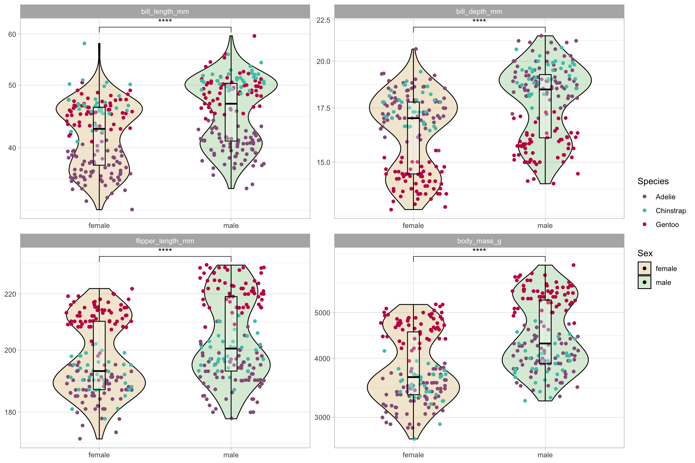
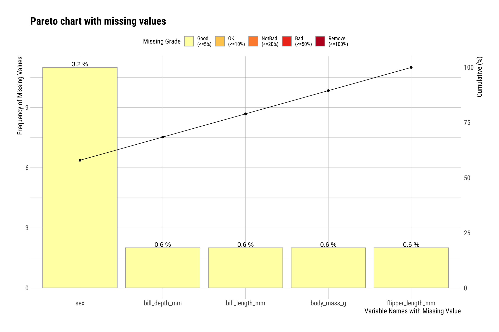

Analisi Pinguini
Emanuel Michele Soda
11/27/2021
Last updated: 2021-12-31
Checks: 7 0
Knit directory: Pinguini/
This reproducible R Markdown analysis was created with workflowr (version 1.6.2). The Checks tab describes the reproducibility checks that were applied when the results were created. The Past versions tab lists the development history.
Great! Since the R Markdown file has been committed to the Git repository, you know the exact version of the code that produced these results.
Great job! The global environment was empty. Objects defined in the global environment can affect the analysis in your R Markdown file in unknown ways. For reproduciblity it’s best to always run the code in an empty environment.
The command set.seed(20211127) was run prior to running the code in the R Markdown file. Setting a seed ensures that any results that rely on randomness, e.g. subsampling or permutations, are reproducible.
Great job! Recording the operating system, R version, and package versions is critical for reproducibility.
Nice! There were no cached chunks for this analysis, so you can be confident that you successfully produced the results during this run.
Great job! Using relative paths to the files within your workflowr project makes it easier to run your code on other machines.
Great! You are using Git for version control. Tracking code development and connecting the code version to the results is critical for reproducibility.
The results in this page were generated with repository version c27d397. See the Past versions tab to see a history of the changes made to the R Markdown and HTML files.
Note that you need to be careful to ensure that all relevant files for the analysis have been committed to Git prior to generating the results (you can use wflow_publish or wflow_git_commit). workflowr only checks the R Markdown file, but you know if there are other scripts or data files that it depends on. Below is the status of the Git repository when the results were generated:
Ignored files:
Ignored: .DS_Store
Ignored: .Rhistory
Ignored: .Rproj.user/
Ignored: analysis/.DS_Store
Ignored: analysis/palmerpenguins_culmen_depth.png
Note that any generated files, e.g. HTML, png, CSS, etc., are not included in this status report because it is ok for generated content to have uncommitted changes.
These are the previous versions of the repository in which changes were made to the R Markdown (analysis/Analysis.Rmd) and HTML (docs/Analysis.html) files. If you’ve configured a remote Git repository (see ?wflow_git_remote), click on the hyperlinks in the table below to view the files as they were in that past version.
| File | Version | Author | Date | Message |
|---|---|---|---|---|
| Rmd | c27d397 | Emanuel Michele Soda | 2021-12-31 | leggere modifiche |
| html | c27d397 | Emanuel Michele Soda | 2021-12-31 | leggere modifiche |
| Rmd | 192e860 | Emanuel Michele Soda | 2021-11-28 | aaa |
| html | 192e860 | Emanuel Michele Soda | 2021-11-28 | aaa |
| html | fa91877 | Emanuel Michele Soda | 2021-11-28 | aa |
| Rmd | 43946df | Emanuel Michele Soda | 2021-11-28 | aggiunti i plot statistici |
| html | e79cb20 | Emanuel Michele Soda | 2021-11-28 | aggiunt analisi |
| Rmd | 0685acf | Emanuel Michele Soda | 2021-11-28 | scritto un po’ di sdescrizione |
| html | 0685acf | Emanuel Michele Soda | 2021-11-28 | scritto un po’ di sdescrizione |
| Rmd | a28ff8a | Emanuel Michele Soda | 2021-11-28 | aggiunta qualche modifica |
| html | a28ff8a | Emanuel Michele Soda | 2021-11-28 | aggiunta qualche modifica |
| Rmd | ee37661 | Emanuel Michele Soda | 2021-11-27 | modifiche |
| html | ee37661 | Emanuel Michele Soda | 2021-11-27 | modifiche |
| html | 1240e90 | Emanuel Michele Soda | 2021-11-27 | aggiunta moodifica |
| Rmd | 3b2c0d7 | Emanuel Michele Soda | 2021-11-27 | analisi |
| html | 3b2c0d7 | Emanuel Michele Soda | 2021-11-27 | analisi |
Exploratory data aalysis
Read data
First of all we will read the data. The data contains some NA values. So, we will drop those NA values. After the drop of the NA values the dimension of the tibble is \(333 \times 8\).
penguins_df <- penguins %>% drop_na()
penguins_df %>% dim()[1] 333 8Number of penguin by species
We have three species of penguins:
- Adelie
- Chinstrap
- Gentoo
As can be seen for the species we have unbalanced classes
penguins_df %>% count(species)# A tibble: 3 × 2
species n
<fct> <int>
1 Adelie 146
2 Chinstrap 68
3 Gentoo 119Number of penguin by sex
As can be seen the number of male and female in the dataset is almost the same. This is good because we do not have unbalanced classes.
penguins_df %>% count(sex)# A tibble: 2 × 2
sex n
<fct> <int>
1 female 165
2 male 168Plot variance feature
my_comparisons <- list(c("female", "male"))
penguins_df %>%
select(-c(island, year)) %>%
pivot_longer(bill_length_mm:body_mass_g) %>%
mutate(across(where(is_character), as_factor)) %>%
ggplot(., aes(sex, value, fill = sex, color = species)) +
geom_violin(width=0.7, color = "black", alpha = 0.3) +
geom_jitter(width=0.25, aplha = 0.8) +
geom_boxplot(width= 0.09, fill = "white", color = "black", alpha = 0.3) +
scale_y_log10() +
scale_fill_manual(values = c('#d8b365','#7fbf7b')) +
scale_color_manual(values = c('#965F8A','#4AC6B7', "#C61951")) +
labs(col = "Species", fill = "Sex", size = "Size", x = NULL, y = NULL) +
ggpubr::stat_compare_means(comparisons = my_comparisons,
label = "p.signif") +
facet_wrap("name", scales = "free") +
scale_size(range = c(1, 3)) +
theme(legend.position="right") 
penguins_df %>%
select(-c(island, year)) %>%
pivot_longer(bill_length_mm:body_mass_g) %>%
mutate(across(where(is_character), as_factor)) %>%
ggplot(., aes(value, fill = sex)) +
geom_density(alpha= 0.3) +
labs(fill = "Sex", x = NULL) +
scale_fill_manual(values = c('#d8b365','#7fbf7b')) +
facet_wrap("name", scales = "free")
ggstatsplot::ggcorrmat(
data = penguins_df %>% select(-c(island, year, species, sex)),
colors = c("#B2182B", "white", "#4D4D4D"),
title = "Correlation among predictors",
matrix.type = "lower")
Plot in a 3D space using the predictor
Let’s make a scatterplot using three predictors which are:
- bill_length_mm
- bill_depth_mm
- flipper_length_mm
The size of the dot will be scaled by body_mass_g and we will color the dots by sex
plot_ly(penguins_df, x = ~bill_length_mm, y = ~bill_depth_mm,
z = ~flipper_length_mm, size = ~body_mass_g,
marker = list(symbol = 'circle',
sizemode = 'diameter'),
sizes = c(1, 20),
color = ~sex, colors = c('#d8b365','#7fbf7b'))No trace type specified:
Based on info supplied, a 'scatter3d' trace seems appropriate.
Read more about this trace type -> https://plotly.com/r/reference/#scatter3dNo scatter3d mode specifed:
Setting the mode to markers
Read more about this attribute -> https://plotly.com/r/reference/#scatter-modeLet’s do the same for the species
plot_ly(penguins_df, x = ~bill_length_mm, y = ~bill_depth_mm,
z = ~flipper_length_mm, size = ~body_mass_g,
marker = list(symbol = 'circle',
sizemode = 'diameter'),
sizes = c(1, 20),
color = ~species, colors = c('#965F8A','#4AC6B7', "#C61951"))No trace type specified:
Based on info supplied, a 'scatter3d' trace seems appropriate.
Read more about this trace type -> https://plotly.com/r/reference/#scatter3dNo scatter3d mode specifed:
Setting the mode to markers
Read more about this attribute -> https://plotly.com/r/reference/#scatter-modepenguins_df %>%
ggplot(., aes(x = bill_length_mm, y = bill_depth_mm,
col = sex, shape = island, size = body_mass_g)) +
geom_point(alpha = 0.7) +
scale_color_manual(values = c('#965F8A','#4AC6B7')) +
theme(legend.position = "top") +
facet_wrap("species")
PCA Plot
pca_res <- prcomp(penguins_df %>% select(-c(species, island, year, sex)),
scale. = TRUE)
fviz_pca_var(pca_res,
col.var = "contrib", # Color by contributions to the PC
gradient.cols = c("#00AFBB", "#E7B800", "#FC4E07"),
repel = TRUE # Avoid text overlapping
)
| Version | Author | Date |
|---|---|---|
| c27d397 | Emanuel Michele Soda | 2021-12-31 |
Percentage variance Expressed by PCs
First of all we will have a look to the percentage of expressed variance by each of the PC. As can be seen the cumulativepercentage of expressed variance by the first two is about \(80\%\).
fviz_eig(pca_res, barcolor = "black",
main = NULL, ylab = "Percentage explained variance") +
scale_y_continuous(labels = ~paste0(.x , '%'))
| Version | Author | Date |
|---|---|---|
| c27d397 | Emanuel Michele Soda | 2021-12-31 |
get_eig(pca_res) %>% data.frame() %>%
rownames_to_column("Dimensions") %>%
tibble() %>%
mutate(across(where(is_character), as_factor)) %>%
mutate(Dimensions = str_remove(string = Dimensions,pattern = "Dim.")) %>%
ggplot(., aes(Dimensions, cumulative.variance.percent)) +
geom_bar(stat="identity", fill="steelblue", col = "black") +
geom_line(aes(group=1)) +
geom_point() +
scale_y_continuous(labels = ~paste0(.x , '%')) +
labs(y= "Cumulative percentage explained variance")
| Version | Author | Date |
|---|---|---|
| c27d397 | Emanuel Michele Soda | 2021-12-31 |
pca_res <-
pca_res$x %>% data.frame() %>% tibble() %>%
mutate(sex = penguins_df$sex, species = penguins_df$species) PCA plot by sex
plot_ly(pca_res, x = ~PC1, y = ~PC2, z = ~PC3,
color = ~sex, colors = c('#d8b365','#7fbf7b'))No trace type specified:
Based on info supplied, a 'scatter3d' trace seems appropriate.
Read more about this trace type -> https://plotly.com/r/reference/#scatter3dNo scatter3d mode specifed:
Setting the mode to markers
Read more about this attribute -> https://plotly.com/r/reference/#scatter-modePCA plot by species
plot_ly(pca_res, x = ~PC1, y = ~PC2, z = ~PC3,
color = ~species, colors = c('#965F8A','#4AC6B7', "#C61951"))No trace type specified:
Based on info supplied, a 'scatter3d' trace seems appropriate.
Read more about this trace type -> https://plotly.com/r/reference/#scatter3dNo scatter3d mode specifed:
Setting the mode to markers
Read more about this attribute -> https://plotly.com/r/reference/#scatter-modeCreation of the model to predict the sex
As we have seen from the plot the data cluster very well according to the three species, this because of course the three species are based on those measurements. For this reason we will try to predict the sex based on those measurements.
First of all we have to create the training dataset that we will call penguin_train. Unfortunately the entire dataset has only 333 sample. Those are not a lot for those reason order to improve the performance we will use the resampling.
The dimension of the training is 249 and for the test we have 84.
penguins_df <- penguins_df %>% select(- c(year, island, species))
# Creation of a split stratified by sex in order to have the same number
# of observation in each group
penguin_split <- initial_split(penguins_df, strata = sex)
penguin_train <- training(penguin_split)
penguin_test <- testing(penguin_split)Creating the model
We will use two very simple model logistic regression and a more complex but less interpretable model random forest
glm_spec <- logistic_reg() %>%
set_engine("glm")
rf_spec <- rand_forest() %>%
set_mode("classification") %>%
set_engine("ranger")
# In order to fit the model we need to create a workflow so
# We will predict sex based on all the other predictor
# bill_length_mm bill_depth_mm flipper_length_mm body_mass_g
penguin_wf <- workflow() %>%
add_formula(sex ~ .)Fit the model
Creting the resampling dataset
folds <- vfold_cv(data = penguin_train, v = 10, repeats = 10, strata = sex)
folds# 10-fold cross-validation repeated 10 times using stratification
# A tibble: 100 × 3
splits id id2
<list> <chr> <chr>
1 <split [223/26]> Repeat01 Fold01
2 <split [223/26]> Repeat01 Fold02
3 <split [223/26]> Repeat01 Fold03
4 <split [224/25]> Repeat01 Fold04
5 <split [224/25]> Repeat01 Fold05
6 <split [224/25]> Repeat01 Fold06
7 <split [225/24]> Repeat01 Fold07
8 <split [225/24]> Repeat01 Fold08
9 <split [225/24]> Repeat01 Fold09
10 <split [225/24]> Repeat01 Fold10
# … with 90 more rowsFitting the model
doParallel::registerDoParallel()
# Logistic model
pengun_logistic <-
penguin_wf %>%
add_model(glm_spec) %>%
fit_resamples(
resamples = folds,
control = control_resamples(save_pred = T))
# Random Forest model
pengun_random_forest <-
penguin_wf %>%
add_model(rf_spec) %>%
fit_resamples(
resamples = folds,
control = control_resamples(save_pred = T))Metrics
Accuracy and AUC
As can be seen even if the __Random Forest_ is more complex model as can be seen the Logistic Regression have similar performance. For this reason we will use the Logistic Regression because is a lot simpler to interpret.
collect_metrics(pengun_logistic)# A tibble: 2 × 6
.metric .estimator mean n std_err .config
<chr> <chr> <dbl> <int> <dbl> <chr>
1 accuracy binary 0.880 100 0.00702 Preprocessor1_Model1
2 roc_auc binary 0.951 100 0.00409 Preprocessor1_Model1collect_metrics(pengun_random_forest)# A tibble: 2 × 6
.metric .estimator mean n std_err .config
<chr> <chr> <dbl> <int> <dbl> <chr>
1 accuracy binary 0.893 100 0.00654 Preprocessor1_Model1
2 roc_auc binary 0.949 100 0.00429 Preprocessor1_Model1ROC curve
As can be see the ROC Curve for each resample is quite good
pengun_logistic %>%
collect_predictions() %>%
group_by(id) %>%
roc_curve(sex, .pred_female) %>%
ggplot(aes(1 - specificity, sensitivity, color = id)) +
geom_abline(lty = 2, color = "gray60") +
geom_path() +
theme(legend.position = "bottom") +
scale_color_brewer(palette = "Set3") +
coord_equal()
Confusion Matrix
And also the Confusion matrix is quite good
penguin_final <- penguin_wf %>%
add_model(glm_spec) %>%
last_fit(penguin_split)
collect_predictions(penguin_final) %>%
conf_mat(sex, .pred_class) %>%
autoplot(type = "heatmap") 
Interpretation
The use of a logistic regression is good because is a very simple and so very interpretable model. In particular there is a property for which the if the exponentiate parameter of the model corresponds to the odds ration
penguin_final$.workflow[[1]] %>%
tidy(exponentiate = TRUE) %>%
mutate(p.value = round(p.value, 10)) %>%
mutate(estimate = round(estimate, 5))# A tibble: 5 × 5
term estimate std.error statistic p.value
<chr> <dbl> <dbl> <dbl> <dbl>
1 (Intercept) 0 8.88 -5.85 0.000000005
2 bill_length_mm 1.10 0.0547 1.66 0.0962
3 bill_depth_mm 6.49 0.257 7.29 0
4 flipper_length_mm 0.980 0.0363 -0.563 0.574
5 body_mass_g 1.00 0.000823 5.77 0.0000000077For this reason we can say that for each \(1\) mm increment in the __bill_depth_mm__the odds of beeing male vs beeing female increase of \(7.23\) time.
m1 <- stats::glm(formula = sex ~., family = stats::binomial, penguin_train)
summary(m1)
Call:
stats::glm(formula = sex ~ ., family = stats::binomial, data = penguin_train)
Deviance Residuals:
Min 1Q Median 3Q Max
-3.1853 -0.3061 0.0129 0.2878 2.5932
Coefficients:
Estimate Std. Error z value Pr(>|z|)
(Intercept) -5.189e+01 8.876e+00 -5.846 5.04e-09 ***
bill_length_mm 9.093e-02 5.466e-02 1.664 0.0962 .
bill_depth_mm 1.870e+00 2.565e-01 7.292 3.06e-13 ***
flipper_length_mm -2.044e-02 3.633e-02 -0.563 0.5737
body_mass_g 4.754e-03 8.233e-04 5.774 7.74e-09 ***
---
Signif. codes: 0 '***' 0.001 '**' 0.01 '*' 0.05 '.' 0.1 ' ' 1
(Dispersion parameter for binomial family taken to be 1)
Null deviance: 345.15 on 248 degrees of freedom
Residual deviance: 130.40 on 244 degrees of freedom
AIC: 140.4
Number of Fisher Scoring iterations: 7plot_model(m1, sort.est = TRUE,show.values = T)
Last we plot the model parameter for the predictor
ggstatsplot::ggcoefstats(m1, ggtheme = theme_light())
As can be seen the flipper_length_mm and the __bill_length_mm_ are not statistically significant. We can remove those predictors and train again the model.
penguin_train <-
penguin_train %>%
select(- c(flipper_length_mm, bill_length_mm))
m2 <- stats::glm(formula = sex ~., family = stats::binomial, penguin_train)
summary(m2)
Call:
stats::glm(formula = sex ~ ., family = stats::binomial, data = penguin_train)
Deviance Residuals:
Min 1Q Median 3Q Max
-3.2400 -0.3353 0.0205 0.3133 2.5726
Coefficients:
Estimate Std. Error z value Pr(>|z|)
(Intercept) -5.164e+01 6.700e+00 -7.707 1.28e-14 ***
bill_depth_mm 1.862e+00 2.456e-01 7.582 3.40e-14 ***
body_mass_g 4.704e-03 6.471e-04 7.269 3.62e-13 ***
---
Signif. codes: 0 '***' 0.001 '**' 0.01 '*' 0.05 '.' 0.1 ' ' 1
(Dispersion parameter for binomial family taken to be 1)
Null deviance: 345.15 on 248 degrees of freedom
Residual deviance: 133.28 on 246 degrees of freedom
AIC: 139.28
Number of Fisher Scoring iterations: 6Looking at the final model we can say that for each \(1\) mm increment in the bill_depth_mm the odds of beeing male vs beeing female increase of \(7.45\) time. While for each \(1\) g increment in the bill_depth_mm the odds of beeing male vs beeing female increase of \(1.01\) times.
plot_model(m2, sort.est = TRUE, show.values = T)
| Version | Author | Date |
|---|---|---|
| c27d397 | Emanuel Michele Soda | 2021-12-31 |
ggstatsplot::ggcoefstats(m2, ggtheme = theme_light())
| Version | Author | Date |
|---|---|---|
| c27d397 | Emanuel Michele Soda | 2021-12-31 |
As can be seen from the pie chart almost 90.5% of the prediction were good
class_label_test <- penguin_test %>% pull(sex)
penguin_test <- penguin_test %>% select(-c(flipper_length_mm, sex))
predicted_porb <-
m2 %>%
predict(penguin_test, type = "response")
predicted_sex <-
ifelse(test = predicted_porb > 0.4, yes = "male", "female")
penguin_test %>%
mutate(sex_true = class_label_test,
sex_predicted = predicted_sex) %>%
mutate(good = ifelse(test = sex_true != sex_predicted,
"Not correct", "Correct")) %>%
count(good) %>%
ggplot(., aes(x="", y=n, fill=good)) +
geom_bar(width = 1, stat = "identity", col = "white") +
geom_label(aes(label = paste0(round(n/sum(n)*100, 1), "%")),
position = position_stack(vjust = 0.5)) +
coord_polar(theta = "y") +
theme_void() +
labs(fill= "The prediction is correct?") +
theme(axis.text.x=element_blank()) +
scale_fill_manual(values = c('#2c7fb8','#f03b20'))
| Version | Author | Date |
|---|---|---|
| c27d397 | Emanuel Michele Soda | 2021-12-31 |
sessionInfo()R version 4.0.3 (2020-10-10)
Platform: x86_64-apple-darwin17.0 (64-bit)
Running under: macOS Big Sur 10.16
Matrix products: default
BLAS: /Library/Frameworks/R.framework/Versions/4.0/Resources/lib/libRblas.dylib
LAPACK: /Library/Frameworks/R.framework/Versions/4.0/Resources/lib/libRlapack.dylib
locale:
[1] it_IT.UTF-8/it_IT.UTF-8/it_IT.UTF-8/C/it_IT.UTF-8/it_IT.UTF-8
attached base packages:
[1] stats graphics grDevices utils datasets methods base
other attached packages:
[1] ranger_0.13.1 vctrs_0.3.8 rlang_0.4.12
[4] ggfortify_0.4.13 sjPlot_2.8.10 factoextra_1.0.7
[7] plotly_4.10.0 yardstick_0.0.9 workflowsets_0.1.0
[10] workflows_0.2.4 tune_0.1.6 rsample_0.1.1
[13] recipes_0.1.17 parsnip_0.1.7 modeldata_0.1.1
[16] infer_1.0.0 dials_0.0.10 scales_1.1.1
[19] broom_0.7.10 tidymodels_0.1.4 palmerpenguins_0.1.0
[22] forcats_0.5.1 stringr_1.4.0 dplyr_1.0.7
[25] purrr_0.3.4 readr_2.1.1 tidyr_1.1.4
[28] tibble_3.1.6 ggplot2_3.3.5 tidyverse_1.3.1
[31] workflowr_1.6.2
loaded via a namespace (and not attached):
[1] utf8_1.2.2 tidyselect_1.1.1 lme4_1.1-27.1
[4] htmlwidgets_1.5.4 grid_4.0.3 gmp_0.6-2.1
[7] pROC_1.18.0 munsell_0.5.0 codetools_0.2-18
[10] effectsize_0.5 future_1.23.0 withr_2.4.3
[13] colorspace_2.0-2 highr_0.9 knitr_1.36
[16] rstudioapi_0.13 ggsignif_0.6.3 listenv_0.8.0
[19] labeling_0.4.2 emmeans_1.7.1-1 git2r_0.29.0
[22] DiceDesign_1.9 farver_2.1.0 datawizard_0.2.1
[25] rprojroot_2.0.2 coda_0.19-4 parallelly_1.29.0
[28] generics_0.1.1 ipred_0.9-12 xfun_0.28
[31] BWStest_0.2.2 doParallel_1.0.16 R6_2.5.1
[34] reshape_0.8.8 lhs_1.1.3 cachem_1.0.6
[37] assertthat_0.2.1 promises_1.2.0.1 nnet_7.3-16
[40] gtable_0.3.0 multcompView_0.1-8 globals_0.14.0
[43] timeDate_3043.102 zeallot_0.1.0 PMCMRplus_1.9.3
[46] splines_4.0.3 rstatix_0.7.0 lazyeval_0.2.2
[49] prismatic_1.1.0 reshape2_1.4.4 yaml_2.2.1
[52] abind_1.4-5 modelr_0.1.8 crosstalk_1.2.0
[55] backports_1.4.0 httpuv_1.6.3 tools_4.0.3
[58] lava_1.6.10 ellipsis_0.3.2 RColorBrewer_1.1-2
[61] jquerylib_0.1.4 WRS2_1.1-3 Rcpp_1.0.7
[64] plyr_1.8.6 ggpubr_0.4.0 rpart_4.1-15
[67] correlation_0.7.1 haven_2.4.3 ggrepel_0.9.1
[70] fs_1.5.1 furrr_0.2.3 magrittr_2.0.1
[73] data.table_1.14.2 reprex_2.0.1 GPfit_1.0-8
[76] mvtnorm_1.1-3 whisker_0.4 sjmisc_2.8.9
[79] patchwork_1.1.1 hms_1.1.1 evaluate_0.14
[82] xtable_1.8-4 sjstats_0.18.1 readxl_1.3.1
[85] gridExtra_2.3 ggeffects_1.1.1 compiler_4.0.3
[88] ggstatsplot_0.9.0 crayon_1.4.2 minqa_1.2.4
[91] htmltools_0.5.2 mc2d_0.1-21 later_1.3.0
[94] tzdb_0.2.0 kSamples_1.2-9 lubridate_1.8.0
[97] DBI_1.1.1 SuppDists_1.1-9.5 sjlabelled_1.1.8
[100] dbplyr_2.1.1 MASS_7.3-54 boot_1.3-28
[103] Matrix_1.3-4 car_3.0-12 cli_3.1.0
[106] parallel_4.0.3 insight_0.14.5 gower_0.2.2
[109] pkgconfig_2.0.3 statsExpressions_1.2.0 paletteer_1.4.0
[112] xml2_1.3.3 foreach_1.5.1 ggcorrplot_0.1.3
[115] bslib_0.3.1 hardhat_0.1.6 estimability_1.3
[118] prodlim_2019.11.13 rvest_1.0.2 snakecase_0.11.0
[121] digest_0.6.29 parameters_0.15.0 rmarkdown_2.11
[124] cellranger_1.1.0 nloptr_1.2.2.3 lifecycle_1.0.1
[127] nlme_3.1-153 jsonlite_1.7.2 carData_3.0-4
[130] viridisLite_0.4.0 fansi_0.5.0 pillar_1.6.4
[133] lattice_0.20-45 fastmap_1.1.0 httr_1.4.2
[136] survival_3.2-13 glue_1.5.1 bayestestR_0.11.5
[139] iterators_1.0.13 class_7.3-19 stringi_1.7.6
[142] sass_0.4.0 performance_0.8.0 rematch2_2.1.2
[145] memoise_2.0.1 Rmpfr_0.8-7 future.apply_1.8.1